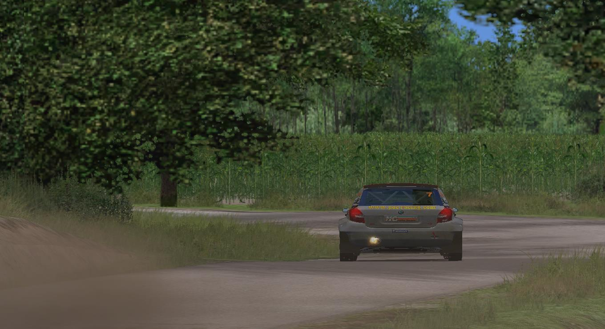
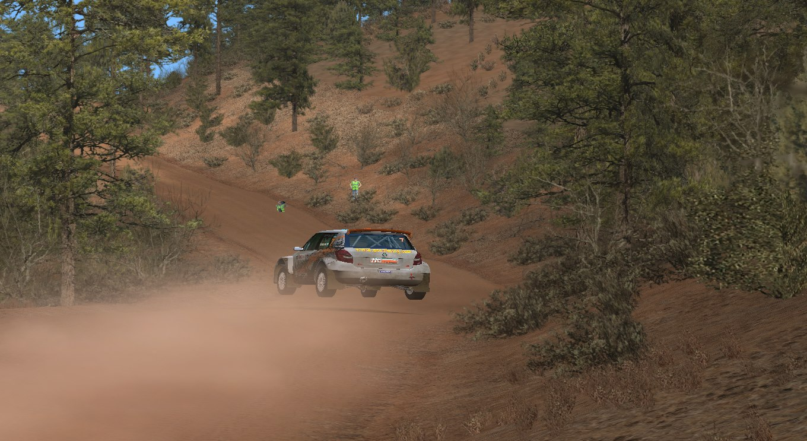
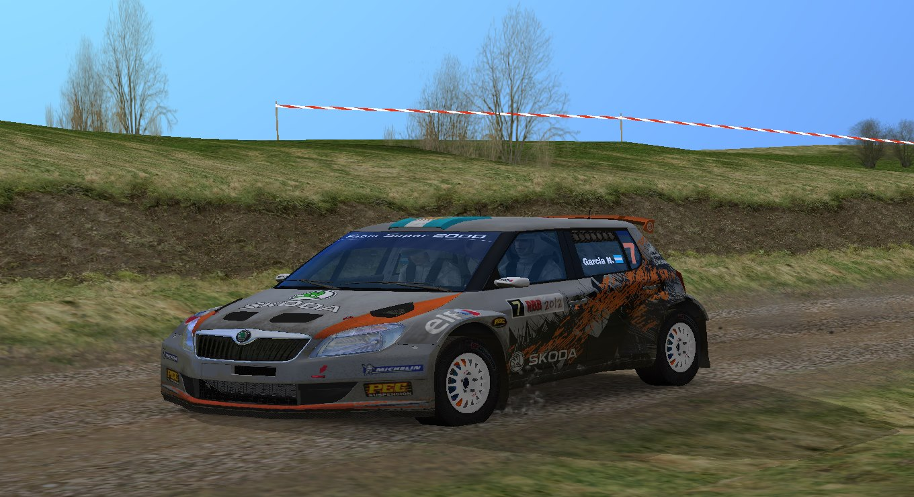
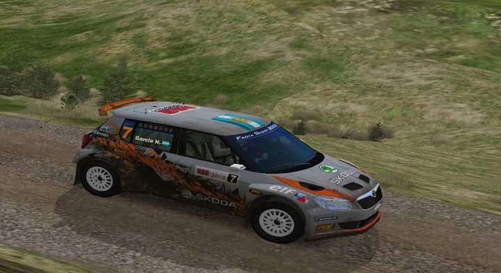

Primeros pasos..
Confieso amante de los rallyes, me sumergí en el mundo de Richard Burns Rally, simulador con un motor de físicas muy realista y que exige al máximo de nuestras habilidades conductivas… Desarrollado por el campeón del mundo Richard Burns y un equipo de ingenieros del rally, este simulador es el pionero en simulación de rallyes y que aun al día de hoy sigue vigente mediante algunos mods desarrollados por entusiastas.



